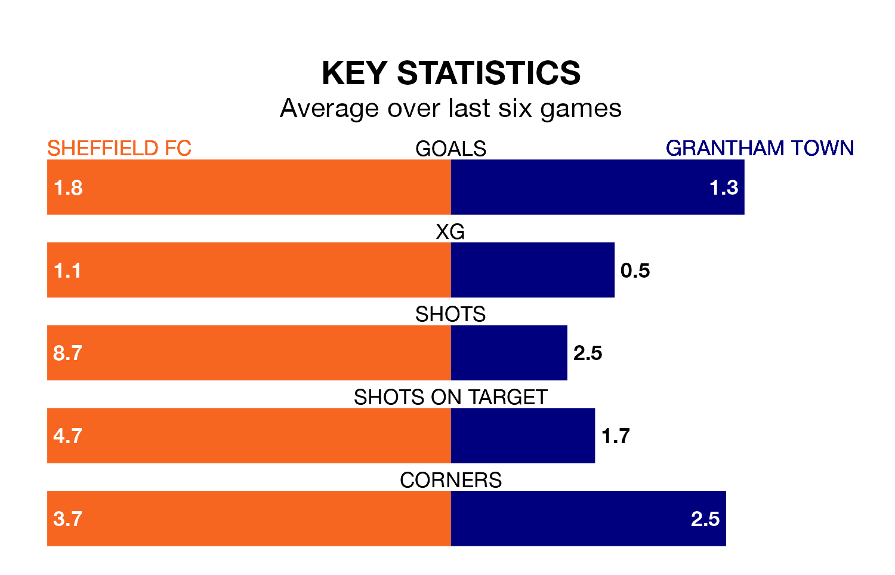

Sheffield FC host Grantham Town on Saturday in the Northern Premier League Division One East.
In their last league match, on February 3, Sheffield FC beat Liversedge 1-0 at home.
Grantham lost, 2-1 at home against Grimsby Borough.
Grantham are 19th in the table after 26 games, of which they have won four and drawn eight, earning 20 points.
Sheffield FC are three places ahead of Town in 16th, with eight wins and three draws putting them on 27 points.
With 36 goals in 26 games so far this season, the visitors are scoring at below the league average rate with 1.4 goals per game. And they are conceding more than average, letting in 59 goals at a rate of 2.3 per game.
The home side, meanwhile, are average scorers, with 1.6 goals per game. They have conceded 1.7 goals per game.
Sheffield FC are in mixed form in the Northern Premier League Division One East, with three wins and a draw from their last six games.
With a win and three draws over that period, Grantham's form is worse – they have taken six points from 18, compared to Sheffield FC's 10.
Over the last two years, Sheffield FC and Grantham have played each other twice. They won one each.
Their last meeting was on January 28 2023, when Grantham won 3-1 away.
Updated: 11:18 (UTC), 08/02/24